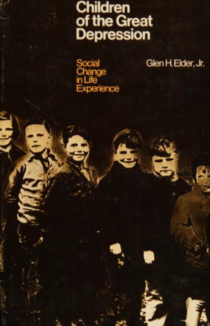
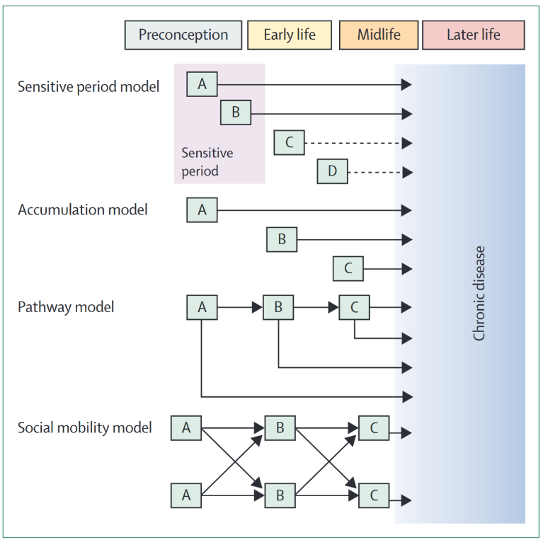
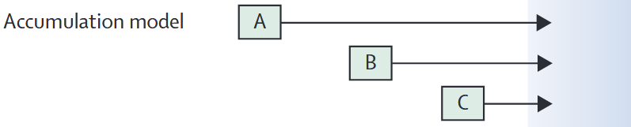
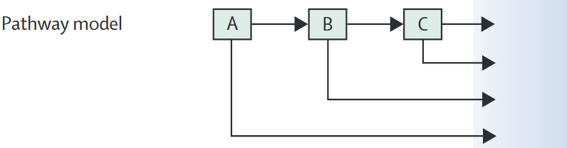
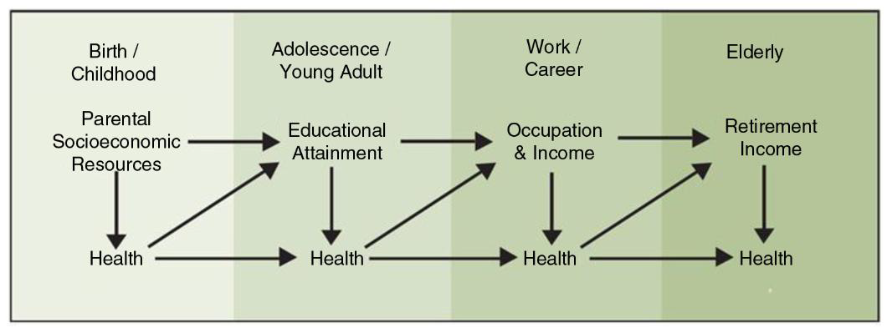
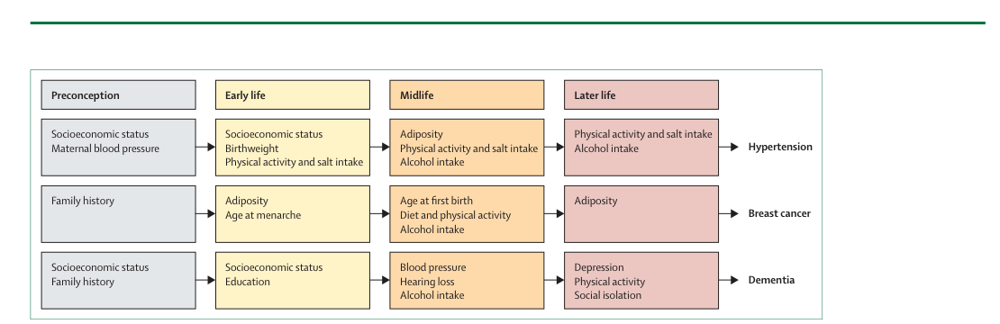
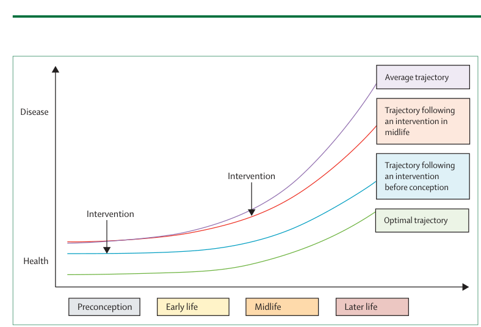
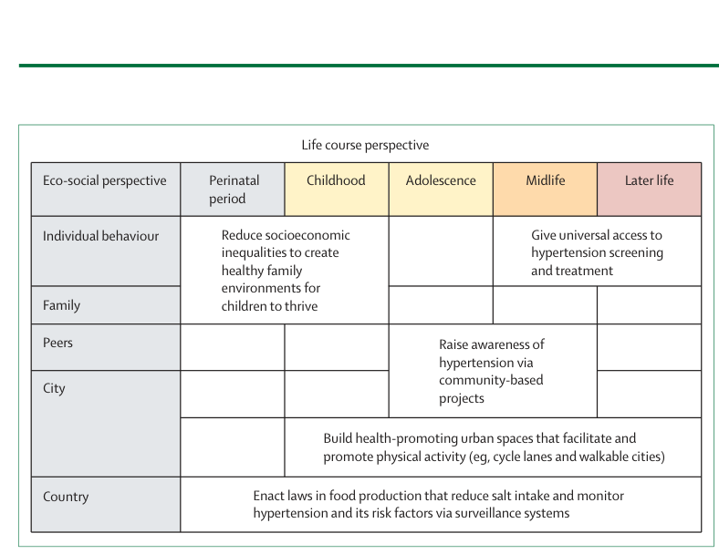
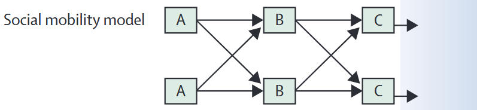

9. Health inequality across the life course
12 November 2026
Why are social inequalities in health often visible decades after their origins? Does it matter when disadvantage occurs, how long it lasts, or whether people’s circumstances improve or deteriorate?
Today we examine health inequality as a process unfolding across the life course, rather than as a difference between groups at one moment in time. We introduce the main principles and causal models, apply them to evidence on chronic diseases, and discuss what they imply for public policy. In the applied part, we use age-related patterns in ESS and ISSP to examine both the potential and the limitations of cross-sectional data.
Today’s route: Life-course perspective → Five principles → Four models → Wagner et al. (2024): disease examples and prevention → Embodiment → Age, period and cohort → Applied analysis.
Learning objectives. By the end of the session, you should be able to explain the five life-course principles; distinguish critical/sensitive period, accumulation, pathway and social mobility models; connect them to concrete health inequalities and policy interventions; and explain why age differences in cross-sectional surveys are not necessarily changes within individuals over time.
Wagner et al. (2024) — Read the article.
As you read, focus particularly on Figure 1 (four causal models), Figure 2 (hypertension, breast cancer and dementia), Figure 4 (the policy dimension), and the discussion of causal inference and policy challenges on pp. e265–e266.
Organisational matters
Visit to the LUPS Drop-in
We will visit the LUPS Drop-in on two alternative dates:
- Thursday, 26 November, 10:00–11:45
- Thursday, 3 December, 10:00–11:45
Please choose one of the two dates. You only need to attend one visit.
Student presentations: Empirical research papers
The presentations will take place on 3 and 10 December, according to your submitted preferences.
| Thursday, 3 December 12:30–14:00 |
Thursday, 10 December 10:00–14:00 |
|---|---|
| Laura Schmid | Hannah Steinhäuser & Katia Gmür |
| Verena Izzo & Miheyon Kim | Moree van de Bree |
| Zehra Zukovic | Abigail Anim |
| Lea Zbinden | Janine Visser & Mailin Loitz |
| (…others?) | (…others?) |
Presentation format: 10 minutes per presentation, followed by 10 minutes for questions and discussion.
Next week: field trip – visit to Tragwerk Luzern
Next week from 8:00-10:00 a.m., we have the chance to visit the organisation Tragwerk Luzern (https://www.tragwerk-luzern.ch/), a local support centre for people affected by addiction, poverty, and social disadvantage.
Please let me know if you cannot join.
Meeting point: 7:55 a.m. at Murbacherstrasse 20, 6002 Luzern (Google Maps)
1. Origins and five principles of the life-course approach
Origins: between biography and history
The approach developed from research on human development, notably Glen Elder’s study of children whose lives were shaped by the Great Depression. It connects individual biographies with historical circumstances and highlights the value of longitudinal observation. In health research, it subsequently converged with birth-cohort studies and research on the developmental origins of adult disease (Elder 1974; Bartley and Kelly-Irving 2025, 127–32).

Five principles
The principles below follow Elder and Shanahan (2007), as presented in Wagner et al. (2024) (p. e261).
| Principle | Central idea | Example for health inequality |
|---|---|---|
| 1. Life-span development | Human development and ageing are lifelong processes. | Health, cognitive functioning and social resources change from childhood to old age. |
| 2. Human agency | People make choices and shape their lives within opportunities and constraints. | Choices about employment or health behaviour depend partly on financial resources, care responsibilities and institutional opportunities. |
| 3. Timing | Consequences depend on when events or exposures occur. | Malnutrition during pregnancy may have different implications from malnutrition in midlife; unemployment during school-to-work transitions may differ from unemployment shortly before retirement. |
| 4. Linked lives | Lives are interdependent and embedded in relationships. | Parental job loss may affect children’s living conditions; illness or care needs can change partners’ employment trajectories. |
| 5. Historical time and place | Life courses are shaped by cohorts, institutions, places and historical events. | Growing up during an economic crisis or before an expansion of social protection can shape later opportunities. |
Sources: Elder and Shanahan (2007); Wagner et al. (2024), p. e261; Bartley and Kelly-Irving (2025), pp. 131–132.
DISCUSSION | Timing, linked lives and social structures
If two people experience a serious household income loss, why might the health consequences differ depending on whether it occurs during childhood, early adulthood or retirement? Which of Elder’s five principles help you explain the differences?
2. Four models of how inequalities develop over time
The five principles help us formulate more specific hypotheses about how exposures produce later health outcomes. Wagner et al. (2024) distinguish four influential causal models. These models are simplifications: real life courses often combine several mechanisms.

2.1 Critical and sensitive periods: When does exposure occur?
Critical period: An exposure can have a lasting effect because it occurs during a particular developmental window. In the strongest formulation, later experiences cannot fully compensate for the impact.
Sensitive period: The influence of an exposure is stronger during some periods than others, but effects may be less permanent and recovery remains possible.
Bartley and Kelly-Irving (2025) (p. 133) distinguish these concepts; Wagner et al. (2024) (p. e262) illustrate them with the timing of prenatal famine and early-childhood lead exposure.
Research on people exposed to famine before birth links the timing of prenatal nutritional deprivation to different health outcomes later in life, including coronary heart disease, obstructive airways disease and glucose tolerance. The relevant question is not just whether their mothers experienced famine, but during which stage of pregnancy. See Painter et al. (2005) and Wagner et al. (2024) (p. e262).
Interpretation: This is evidence consistent with timing-dependent effects; it does not imply that all disadvantages in childhood are irreversible.
2.2 Accumulation: How much disadvantage builds up?

The accumulation model focuses on the duration and accumulation of exposures. Health risk may increase because the same adverse condition persists, or because several different risk factors combine over time (Wagner et al. 2024, e262).
- Repeated disadvantage: Several periods of poverty or insecure employment.
- Multiple exposures: Poor housing, stressful work and environmental pollution, sometimes overlapping.
- Cumulative advantage: Stable economic security and access to protective resources across several life stages.
Empirical example: Singh-Manoux et al. (2004) followed socioeconomic positions across the life course and found patterns consistent with an accumulation of disadvantage in midlife health outcomes.
If exposure in early childhood matters more than comparable exposure later, this supports a timing argument. If the number or duration of disadvantaged periods matters most, this supports an accumulation argument. A given study may find evidence of both.
2.3 Pathways or chains of risk: How does one exposure lead to another?

The pathway model describes a sequence of linked exposures: one disadvantage increases the probability of another, setting in motion a chain of risk (Wagner et al. 2024, e262).

Illustrative pathway based on (Arcaya et al. 2015). The arrows represent a proposed causal sequence rather than effects identified by this diagram.
A related empirical example is childhood socioeconomic position, subsequent health behaviours and adult health (van de Mheen et al. 1998).
Connection to last session: This resembles mediation, but life-course research often requires measurements of several mediators at different times and attention to time-varying confounding.
3. Applying the models: Three chronic diseases
The mandatory reading uses hypertension, breast cancer and dementia to show why exposures should be investigated across several life stages—not only at the age when a condition is diagnosed.

Hypertension
Hypertension has risk factors extending from before birth to later life. Wagner et al. (2024) (pp. e263–e264) describe the roles of maternal blood pressure and prenatal exposures, childhood diet and physical activity, and adult obesity, alcohol intake and salt consumption.
Policy implications: Creating healthier environments in childhood, reducing population salt consumption and improving physical activity can complement screening and treatment in midlife and older age.
Breast cancer
Breast cancer demonstrates why biological timing may matter. The relationship between adiposity and disease risk differs across reproductive stages; factors such as age at menarche, first birth, pregnancy and menopause help define distinct exposure windows.
Policy implications: Screening detects disease at relevant ages, but a life-course strategy also asks about environmental and behavioural exposures much earlier in life (Wagner et al. 2024, e264).
Dementia
Risk of dementia in later life is related to factors distributed across the life course: education earlier in life, vascular risk and hearing loss in midlife, and social isolation and other health conditions in later life. The reading emphasises cognitive reserve and the possibility of prevention at several ages.
Policy implications: Education policy and opportunities for cognitive activity can complement midlife cardiovascular prevention and support against isolation in later life (Wagner et al. 2024, e264–65).
GROUP DISCUSSION | Applying the mandatory reading
Form three groups: hypertension, breast cancer and dementia. Using Wagner et al. (2024) (pp. e263–e265), prepare a short response:
- Which exposures matter at which stages of the life course?
- Which of the four life-course models best describe the proposed mechanisms? Could more than one apply?
- Which intervention would you prioritise, at what age, and at which policy level (individual, family, community or state)?
Allow approximately 10 minutes for discussion and 3 minutes per group for reporting back.
5. From life-course evidence to public policy
Wagner et al. (2024) argue that life-course epidemiology offers opportunities for primordial prevention: preventing exposure to risk factors in the first place, not merely detecting or treating disease once it occurs.

Intervene earlier, later—or throughout life?
The optimal choice depends on the health outcome, the mechanism and the policy objective.
- Early-life intervention: Reduce childhood poverty, improve nutrition, housing and educational opportunities.
- Population-wide prevention: Change environments and regulation (e.g. food standards or walkable urban spaces) across all ages.
- Later-life intervention: Provide screening, treatment, rehabilitation and support for people already at elevated risk.
- Vulnerable populations: Reduce systematically unequal exposure and barriers to protective resources.
The eco-social framework in Wagner et al. (2024) emphasises that prevention can act at the level of individuals, families, communities, cities and countries—not only through individual behaviour change.

Delayed benefits: Investments in early-life conditions may yield large benefits only decades later, while political and fiscal incentives often favour shorter time horizons.
Precision versus simplicity: Identifying a sensitive window can help target interventions, but overly narrow targeting may miss the benefits of reducing common risks throughout the population.
Wagner et al. (2024) (p. e266) also note that even small effects at the individual level can matter greatly when an exposure is widespread.
Swiss practice: Life-course prevention and health promotion
How explicitly is the life-course perspective reflected in Swiss health policy? Switzerland provides an interesting example because national strategies establish priorities, while cantons and municipalities play an important role in implementation.
Federal level: Health2030 and the NCD Strategy
The Federal Council’s Health2030 strategy sets out eight objectives for Swiss health policy. One is “Healthy ageing” (Gesund älter werden), which includes two priorities:
- Strengthening the prevention of non-communicable diseases (NCDs).
- Improving the health of children and adolescents.
The objective is therefore not restricted to old age. It recognises that the conditions for healthy ageing are established throughout the life course.
The more specific National NCD Strategy was developed jointly by the FOPH, the cantons and Health Promotion Switzerland. Originally covering 2017–2024, it has been extended until 2028.
Its objectives include preventing or delaying chronic diseases, reducing premature mortality, strengthening health-promoting environments and improving health equity.
The 2025–2028 action plan is particularly relevant to the life-course approach:
- Life stages and settings: Prevention should reflect the conditions and needs of people at different ages and in different social environments.
- Accumulation of risk: Long-term exposure to smoking, unhealthy nutrition, physical inactivity and socioeconomic disadvantage can contribute to chronic disease.
- Health equity: Preventive measures should reach groups facing socioeconomic disadvantage and other structural barriers.
- Prevention across the care continuum: Health promotion should complement prevention, treatment and care.
The current implementation priorities include mental health, tobacco and nicotine prevention, and overweight and obesity prevention. Dementia prevention has also gained prominence.
A concrete example: The FOPH’s Early childhood influences lifelong health initiative emphasises pregnancy and the first years of life. It focuses particularly on families experiencing socioeconomic disadvantage and promotes coordinated support across healthcare, education and social services.
Sensitive periods: Supporting families during pregnancy and early childhood, when some exposures have particularly important developmental consequences.
Accumulation: Reducing repeated exposure to health risks and disadvantage across different life stages.
Pathways: Preventing early disadvantages from contributing to later inequalities in education, employment and health.
The NCD Strategy provides a policy framework that is consistent with these models, but it does not necessarily distinguish or empirically test the different causal mechanisms.
Cantonal level: How does Lucerne implement these priorities?
The Canton of Lucerne has its own Health Promotion Strategy 2021–2033 (“Gesundes Luzern”). Its overarching objective is to create environments that support healthy living.
The strategy is implemented through successive thematic priorities: physical activity-friendly environments (2021–2024) and social encounters and connections (from 2025).
In addition, the cantonal Health Promotion Programme 2026–2029 supports non-profit projects promoting nutrition, physical activity and mental health among children, young people and older adults.
The following examples illustrate how these policies address different life stages:
| Life stage | Policies and measures in Lucerne | Life-course perspective |
|---|---|---|
| Early childhood | Frühe Förderung: parental counselling, early language development, support for families and coordination between local services. The canton offers start-up funding to municipalities developing early-childhood provision. | Early childhood as a sensitive period; improving starting conditions and preventing chains of disadvantage. |
| Childhood and adolescence | Psychische Gesundheit: mental health promotion in schools, strengthening resilience and supporting transitions into adulthood. These were explicit objectives of the 2022–2025 programme. | Timing, life transitions and linked lives; supporting young people within families, schools and communities. |
| Older age | Gesundheit im Alter: promoting physical activity, nutrition and mental health, including fall prevention, social participation and support for vulnerable older people. | Preventing further accumulation of risk, maintaining functioning and supporting healthy ageing. |
| Across life stages | Gesundes Luzern: creating environments that encourage movement, social encounters and supportive relationships. | Addressing social and environmental determinants of health across the life course, rather than focusing only on individual behaviour. |
The 2026–2029 programme provides a current funding framework; some linked programme descriptions refer to the preceding 2022–2025 period.
Importantly, the cantonal approach combines individual-level prevention (such as strengthening health literacy) with environmental and community interventions (such as improving opportunities for physical activity and social participation).
- Which of the four life-course models provides the strongest rationale for each programme?
- Do these measures mainly change individual behaviour, or also the conditions that shape exposure to disadvantage?
- What data and follow-up period would be needed to establish whether a programme reduces health inequalities, rather than only improving average health?
Important: The programmes illustrate life-course reasoning in public policy. Their existence does not establish that they have already reduced health inequalities.
7. Takeaways and outlook next week
- Health inequalities have histories. Earlier social conditions can matter long after the original exposure, while later circumstances can reinforce or partly offset them.
- Timing, duration, sequence and mobility are different mechanisms. Critical/sensitive periods, accumulation, pathways and social mobility generate distinct—but potentially overlapping—hypotheses.
- Social inequality becomes embodied over time. Material, behavioural and psychosocial pathways interact with biological processes across life stages.
- Public policy can act at several ages and levels. Life-course evidence can inform early prevention, population-wide protection and later treatment; it does not imply that intervention in adulthood is too late.
- Age differences are not trajectories. Repeated cross-sectional ESS/ISSP data cannot independently identify ageing, period and cohort processes without assumptions.
Final question: If preventing disadvantage in childhood produces health benefits decades later, what makes such policies politically challenging—and how might policy makers nevertheless justify them?
Next week: Health inequalities across places and neighbourhoods
Field trip – visit to Tragwerk Luzern
Next week from 8:00-10:00 a.m., we have the chance to visit the organisation Tragwerk Luzern (https://www.tragwerk-luzern.ch/), a local support centre for people affected by addiction, poverty, and social disadvantage.
Please let me know if you cannot join.
Meeting point: 7:55 a.m. at Murbacherstrasse 20, 6002 Luzern (Google Maps)
10:15-13:45: normal in-class session as usual.
Reading: Hasager, L., & Jørgensen, M. (2026). Sick of your poor neighborhood? Quasi-experimental evidence on neighborhood effects on health. Journal of Public Economics, 256, 105599. https://doi.org/10.1016/j.jpubeco.2026.105599.
2.4 Social mobility: Does the direction of change matter?

Social mobility refers to movements between socioeconomic positions, either between generations (parents and children) or within an individual’s life. Relevant questions include whether health depends mainly on the origin, the destination, or the experience and direction of mobility itself.
Wagner et al. (2024) (p. e262) discuss a Swedish study in which moving from non-manual to manual occupations was associated with a greater risk of myocardial infarction than remaining in the same occupational class. However, it is difficult to separate the effect of mobility itself from the influence of the starting and ending positions.
Compare the models: Do they make different predictions?
Consider two people who spent one of three observed life stages in poverty. Person A experienced poverty only in childhood; Person B experienced poverty only in adulthood.
These hypotheses require appropriately timed longitudinal data to be distinguished credibly.